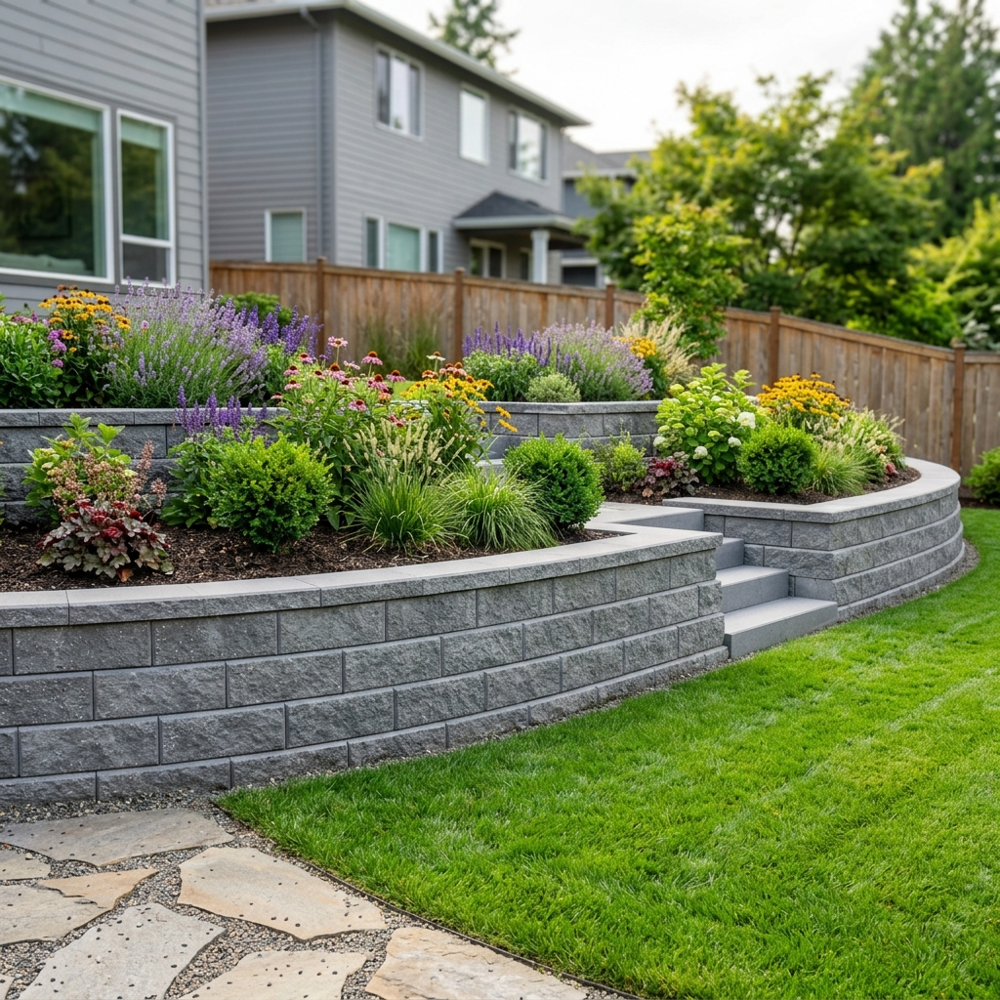

Hardscaping
Concrete Block Contractors in Eastern Iowa Region
Custom paver patios, walkways, and outdoor surfaces built with proper base preparation, drainage, and clean finish details.
Professional patio paver installation in Eastern Iowa
As a reliable concrete block wall installer in Eastern Iowa, our primary focus is to deliver top-notch service to our valued clients. Our team of experienced professionals understands the importance of quality and durability when it comes to cinder block walls. We take pride in being one of the leading cinder block wall contractors in Eastern Iowa, and we achieve this reputation through meticulous attention to detail and a commitment to customer satisfaction.
From the initial consultation to the final construction phase, we work closely with our clients to understand their unique needs and preferences. Whether it's a residential or commercial project, our goal is to provide expert craftsmanship and unmatched expertise in every aspect of concrete block wall installation, ensuring that your project stands the test of time and exceeds your expectations.
What is the difference between a concrete
block contractor and a mason?
A concrete block contractor and a mason are both skilled professionals in the construction industry, but they specialize in different aspects of masonry work.
A concrete block contractor primarily focuses on the installation and construction of structures using concrete blocks, such as retaining walls, foundations, and load-bearing walls. They excel in the precise placement and alignment of these blocks, ensuring structural integrity.
On the other hand, a mason is a broader term that encompasses professionals who work with various types of masonry materials, including bricks, stones, and concrete blocks. Masons are responsible for crafting aesthetically pleasing walls, chimneys, and other decorative or non-structural elements, often employing intricate patterns and designs. While there is some overlap in their skill sets, these distinctions highlight the specialized expertise each brings to the construction field.

Can concrete blocks be used for both residential
and commercial construction projects?
Yes, concrete blocks are incredibly versatile and find applications in both residential and commercial construction projects. In residential settings, they serve as a sturdy foundation for homes, create durable retaining walls, or even shape aesthetically pleasing landscaping elements.
Meanwhile, in commercial construction, concrete blocks are the backbone of robust structural designs, providing strength and longevity for office buildings, warehouses, and retail spaces. Their adaptability, cost-effectiveness, and ability to withstand various environmental conditions make them a reliable choice for a wide range of construction needs, regardless of the scale or purpose of the project.

What are the common problems of a patio paver?
-
1. Weed Growth
Problem: Weeds can sprout between paver joints when joint sand breaks down or polymeric sand was not applied correctly.
Solution: Re-sweep joint sand or apply polymeric sand, and consider a pre-emergent treatment. Proper installation with compacted base and edge restraint helps prevent shifting that opens gaps for weeds.
-
2. Uneven Pavers
Problem: Pavers can settle or heave when the base was not compacted properly, drainage is poor, or freeze-thaw cycles push stones out of level.
Solution: Lift affected pavers, re-compact the base, add fresh bedding sand, and relay. Address drainage issues upstream to prevent recurrence.
-
3. Shifting and Gaps
Problem: Without edge restraint, pavers along the perimeter can drift outward over time, creating gaps and an uneven border.
Solution: Install or replace plastic or concrete edge restraints, re-compact the border course, and refill joints with sand.
-
4. Staining and Discoloration
Problem: Oil, rust, leaves, and organic debris can leave stains on paver surfaces, especially on lighter-colored stones.
Solution: Clean with a paver-safe detergent or pressure wash at low setting. Seal pavers after cleaning if you want added stain protection.
-
5. Poor Drainage / Pooling Water
Problem: Water that pools on the patio surface can cause slippery conditions, accelerate joint sand loss, and lead to freeze damage in winter.
Solution: Ensure the patio has a minimum 1–2% slope away from structures. Add channel drains or re-grade low spots during a repair if needed.